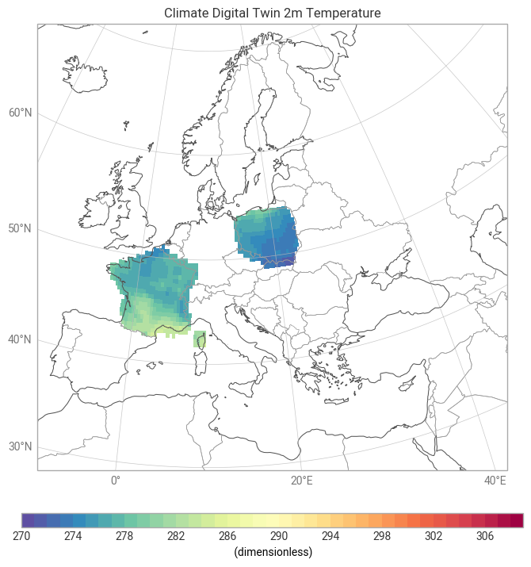
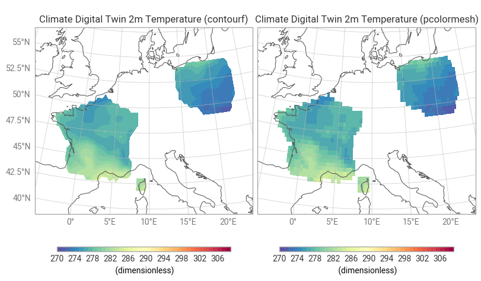

Polytope Climate-DT Country pcolormesh example notebook#
This notebook shows how to use earthkit-data and earthkit-plots to pull destination-earth data from LUMI and plot it using earthkit-plots using pcolormesh and contourf.
Before running the notebook you need to set up your credentials. See the main readme of this repository for different ways to do this or use the following cells to authenticate.
You will need to generate your credentials using the desp-authentication.py script.
This can be run as follows:
Show code cell source
%%capture cap
%run ../../desp-authentication.py
This will generate a token that can then be used by earthkit and polytope.
Show code cell source
output_1 = cap.stdout.split('}\n')
access_token = output_1[-1][0:-1]
Requirements#
To run this notebook install the following:
pip install earthkit-data
pip install earthkit-plots
pip install earthkit-geo
pip install earthkit-regrid (Optional for spectral variables)
pip install cf-units (Optional for unit conversion in maps)
If you do not have eccodes installed please install eccodes using conda as it is a dependency of earthkit, or install earthkit via conda
conda install eccodes -c conda-forge
conda install earthkit-data -c conda-forge
Show code cell source
import earthkit.data
import earthkit.plots
from earthkit.plots.resample import Interpolate
import earthkit.geo.cartography
import numpy as np
Show code cell source
# Defaults to making a live data request. Set to false to use the cached GRIB file instead.
import os
LIVE_REQUEST = os.getenv("LIVE_REQUEST", "true").lower() == "true"
LIVE_REQUEST
Show code cell source
countries = ["France", "Poland"] # List of countries
shapes = earthkit.geo.cartography.country_polygons(countries, resolution=50e6)
request = {
"activity": "projections",
"class": "d1",
"dataset": "climate-dt",
"experiment": "ssp3-7.0",
"generation": "2",
"levtype": "sfc",
"date": "20400102",
"model": "ifs-nemo",
"expver": "0001",
"param": "167/165",
"realization": "1",
"resolution": "standard",
"stream": "clte",
"type": "fc",
"time": "1200",
"feature": {
"type": "polygon",
"shape": shapes
},
}
Show code cell source
data_file = "../data/climate-dt-earthkit-fe-pcolormesh.covjson"
if LIVE_REQUEST:
data = earthkit.data.from_source("polytope", "destination-earth", request, address="polytope.mn5.apps.dte.destination-earth.eu", stream=False)
data.to_target("file", data_file)
else:
data = earthkit.data.from_source("file", data_file)
Show code cell source
ds = data.to_xarray()
ds
<xarray.Dataset> Size: 16kB
Dimensions: (datetimes: 1, number: 1, steps: 1, points: 329)
Coordinates:
* datetimes (datetimes) <U20 80B '2040-01-02 12:00:00Z'
* number (number) int64 8B 0
* steps (steps) int64 8B 0
* points (points) int64 3kB 0 1 2 3 4 5 6 ... 322 323 324 325 326 327 328
latitude (points) float64 3kB 41.41 41.81 42.21 ... 54.34 54.34 54.72
longitude (points) float64 3kB 9.141 8.789 8.858 ... 22.03 22.97 17.53
levelist (points) float64 3kB 0.0 0.0 0.0 0.0 0.0 ... 0.0 0.0 0.0 0.0 0.0
Data variables:
10u (datetimes, number, steps, points) float64 3kB -5.558 ... 7.583
2t (datetimes, number, steps, points) float64 3kB 284.9 ... 280.4
Attributes: (12/15)
activity: projections
class: d1
dataset: climate-dt
experiment: ssp3-7.0
expver: 0001
generation: 2
... ...
resolution: standard
stream: clte
type: fc
number: 0
step: 0
date: 2040-01-02 12:00:00ZShow code cell source
lats = ds.latitude.values
lons = ds.longitude.values
values = ds["2t"].values.squeeze()
# Pre-interpolate unstructured data onto a regular grid
interpolator = Interpolate(distance_threshold="auto")
lons_grid, lats_grid, values_grid = interpolator.apply(lons, lats, values)
chart = earthkit.plots.Map(domain=["Europe"])
style = earthkit.plots.styles.Style(
levels=np.arange(270, 310, 1),
colors="Spectral_r",
)
chart.pcolormesh(
x=lons_grid, y=lats_grid, z=values_grid, style=style,
)
chart.coastlines()
chart.borders()
chart.gridlines()
chart.title("Climate Digital Twin 2m Temperature")
chart.legend()
chart.show()

Show code cell source
figure = earthkit.plots.Figure(rows=1, columns=2, domain=["France", "Poland"])
style = earthkit.plots.styles.Style(
levels=np.arange(270, 310, 1),
colors="Spectral_r",
)
chart = figure.add_map()
chart.contourf(
x=lons_grid, y=lats_grid, z=values_grid, style=style,
)
chart.legend()
chart.title("Climate Digital Twin 2m Temperature (contourf)")
chart = figure.add_map()
chart.pcolormesh(
x=lons_grid, y=lats_grid, z=values_grid, style=style,
)
chart.legend()
chart.title("Climate Digital Twin 2m Temperature (pcolormesh)")
figure.coastlines()
figure.gridlines()
